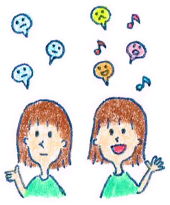

22 : 活き活きとした話をするためのコツ
・活き活きとした話をするためのコツ

今回は発話の4回目のコラムです。
今日はドトールでノマドワーカーです。
といってもこのコラムを書く作業が果たして仕事なのか？
ちょっと疑問ですが（笑）、でも良いんです。コラムを書くのが好きなので！さてさて、前回は話し方のコツとして、純粋に会話にボリュームを持たせることを目的として練習をしてみました。ここから先は少し高度な話で、内容にこだわって考えてみましょう。
発話の際に重要なことは情報を淡々と話すだけでなく、その事実に対してどのように感じるのかを話すと面白くなります。
例えば、皆さんは次の2つの会話を見てみてどのように感じるでしょうか。
例１
「昨日横浜に買い物に行ったんだ。赤レンガ倉庫とかランドマーク、大桟橋をぐるぐるしました。3時間ぐらいいたかなあ。」
例２
「昨日横浜に買い物に行ったんだ。特に面白かったのは（どこかと言うと？＊自分への質問）大桟橋ですね。 ウッドデッキで海が一望できるのでムード満点ですよ。 あそこは絶対恋人できたら行くべきですね！」
・会話では事実より感情や考え方が大事
例１は事実をベースに話していて、そこに考えや感情が含まれていないのでちょっと無機質な感じがすると思います。
例2では自分の考えや感情を表現しているので、なんだか面白そうだなあ〜。 と感じる方が多い（はず笑）のではないでしょうか。
皆さんは普段の会話・話し方の中で、感情や意見を表現しているでしょうか？もし無機質な話し方が多いなと感じたら、是非意識してみてください。
具体的には前回学んだ自分への質問を応用して、
「○○について僕はどんな意見をもっているのかと言うと？」 「○○についての僕の○○な感情はどんな感じかというと？」
と問いかけてお話してみるといいでしょう。
練習問題
それでは練習をしてみましょう！ まずは準備として、録音機材を用意してください。
1分程度の発話を録音するので、設定も確認しましょう。
ビデオカメラ機能がついている方は尚良しです。
それでは次の質問に対して1分程度お話してみてください
・「好きな旅行先はどこですか？」
いかがでしたでしょうか？ お話してみましたか？
それでは自分の録音を聞いてみましょう。 聞いてみてその話の中に感情や意見は入っているでしょうか？ 数字や事実控えめにして、自分なりの問題提起や、楽しい、うれしいといった感情が入っていればOKです。
それでは次の2つの質問に対してもそれぞれ1分程度お話してみてください
・「休日は何をしていますか？？」
・「いまの仕事（勉強）のやりがいはどんなところにありますか？」
はい！おつかれさまでした。
なかなか大変だったと思いますが、こういった地道な練習なくして話す力はつきません。コツコツ努力をしてみてくださいね！話し方への苦手意識が。徐々に緩和されていきますよ。
 |
|